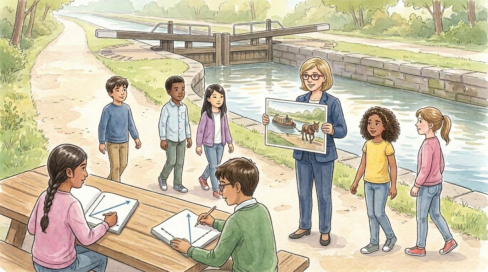

Grade 8 · Social studies · SS.6-8.EC.1.LC
The ditch that built a city
A story about 96 miles dug by hand, mules on a towpath, and a town of 4,000 people that became a city of more than 100,000.
La zanja que construyó una ciudad. Un cuento sobre 96 millas cavadas a mano, mulas en un camino de sirga y un pueblo de 4,000 habitantes que se convirtió en una ciudad de más de 100,000.
Social studies words you will learn
Tap a green word to see what it means.
Toca una palabra verde para ver qué significa. Con la ayuda activada, verás también la definición en español.
The story
El cuento está en inglés. Pulsa «Listen to the story» para escucharlo y toca las palabras verdes cuando no entiendas una.
The class walked along a quiet, narrow with old stone walls. Ms. Novak stopped beside a set of heavy wooden gates. "This is a of the Illinois and Michigan Canal," she said. "Remember the short portage that Jolliet saw in 1673? This canal is his idea, finally built."
"Digging began on July 4, 1836, at Bridgeport, in Chicago," said Ms. Novak. "The canal opened in April 1848. It ran 96 miles, from the Chicago River to the Illinois River at LaSalle-Peru." "Ninety-six miles dug by hand?" said Daniel. "Mostly by hand," she said. "Many of the workers were Irish immigrants."
"The canal was 60 feet wide and 6 feet deep," Ms. Novak said, "and it had 15 locks to raise and lower the boats 141 feet, the difference in height between Lake Michigan and the Illinois River." Israel did the division. "That's about nine and a half feet per lock."
She showed them an old picture: a long boat on the canal, pulled by mules walking on a . "Boats carried grain, lumber and people. A passenger trip from Chicago to LaSalle took about a day." "For the first time, boats could travel from the Great Lakes to the Mississippi River and on to the Gulf of Mexico," she said. "Farmers could reach new , east and south."
Then she gave each pair a table of numbers. "In 1836, when digging started, Chicago had about 4,000 people," read Athena. "In 1848, when the canal opened, it had about 20,000. And in 1860, more than 112,000." Daniel drew the graph. The line climbed steeply.
"So the canal was a good decision?" asked Selena. "It was an expensive ," said Ms. Novak. "The state borrowed a lot of money, building stopped for years when it ran out, and the work was hard and dangerous for the diggers. Economists look at : who paid, who gained and who carried the risks. The canal brought jobs, trade and growth, but it also brought debt and hard lives for the workers."
"And then the railroads came," said Elías, reading a sign. "The same year the canal opened, Chicago got its first railroad. Little by little, trains carried more and more of the goods. The canal closed to business in 1933." "So even a big success can be replaced," said Salma.
On the way back, the class passed a family riding bikes on the old towpath, now a trail. Sophia wrote in her notebook: A decision about a ditch decided the future of a city. Ask who paid, who gained and who did the digging.
Pause to connect
Visual arts · VA:Cn11.1.8
Read the Encyclopedia of Chicago entry about the Illinois and Michigan Canal and open its map of the canal corridor.
Lee el artículo de la Encyclopedia of Chicago sobre el canal de Illinois y Míchigan y abre su mapa del corredor del canal.
Illinois and Michigan Canal (Encyclopedia of Chicago) (opens in a new tab)
What you will see: An article about the history of the canal, with links to maps of northeastern Illinois that show the route of the canal from Chicago toward LaSalle and the towns along it.
Lo que verás: Un artículo sobre la historia del canal, con enlaces a mapas del noreste de Illinois que muestran la ruta del canal desde Chicago hacia LaSalle y los pueblos que hay a lo largo de ella.
- Follow the canal on the map from Chicago to LaSalle. Which towns grew up along it?Sigue el canal en el mapa desde Chicago hasta LaSalle. ¿Qué pueblos crecieron a su lado?
- Why would towns grow right next to a canal? Think about jobs, trade and travel.¿Por qué crecerían los pueblos justo al lado de un canal? Piensa en los trabajos, el comercio y los viajes.
Think about it, then answer in your notebook or talk it over with someone at home.
Check your thinking
Towns like Lockport, Joliet, Morris, Ottawa and LaSalle grew along the canal. Canals brought boats, so towns along them had jobs loading and unloading goods, stores and mills, and easy travel to Chicago and the Mississippi. Transportation routes often decide where cities grow.
Glossary
- canal
- A waterway dug by people for boats or for water.
- canal: Una vía de agua excavada por las personas para barcos o para llevar agua.
- lock
- A section of a canal with gates, where the water level is raised or lowered to move boats up or down.
- esclusa: Un tramo del canal con compuertas, donde se sube o se baja el nivel del agua para mover los barcos hacia arriba o hacia abajo.
- towpath
- A path beside a canal where mules or horses walked, pulling the boats with ropes.
- camino de sirga: Un camino junto al canal por donde caminaban mulas o caballos que tiraban de los barcos con cuerdas.
- investment
- Money or work spent now in the hope of getting a benefit later.
- inversión: Dinero o trabajo que se gasta ahora con la esperanza de obtener un beneficio después.
- costs and benefits
- What you give up and what you gain when you make an economic decision.
- costos y beneficios: Lo que se pierde y lo que se gana al tomar una decisión económica.
- market
- A place or system where people buy and sell goods.
- mercado: Un lugar o sistema donde la gente compra y vende productos.
Questions
Choose the correct answer. If you make a mistake, the story shows you where the answer is.
Elige la respuesta correcta. Si te equivocas, el cuento te muestra dónde está la respuesta.
-
Question A. How long was the Illinois and Michigan Canal?
¿Cuánto medía el canal de Illinois y Míchigan?
The canal ran 96 miles, from the Chicago River at Bridgeport to the Illinois River at LaSalle-Peru.
-
Question B. Why did the canal need 15 locks?
¿Por qué necesitaba el canal 15 esclusas?
The locks raised and lowered the boats 141 feet, the difference in height between the lake and the Illinois River.
-
Question C. What new route did the canal make possible?
¿Qué ruta nueva hizo posible el canal?
For the first time, boats could travel from the Great Lakes to the Mississippi River and on to the Gulf of Mexico.
-
Question D. How did Chicago's population change?
¿Cómo cambió la población de Chicago?
Chicago grew from about 4,000 people in 1836 to about 20,000 in 1848 and more than 112,000 in 1860.
-
Question E. According to Ms. Novak, how do economists judge a decision like the canal?
Según la Sra. Novak, ¿cómo juzgan los economistas una decisión como la del canal?
Economists weigh costs and benefits: the canal brought jobs, trade and growth, but also debt and hard lives for the workers.
Challenge: explain your thinking
Weigh costs and benefits
Make a chart with three rows: workers, farmers and the city of Chicago. For each one, write one benefit and one cost of building the canal. Then decide: was it a good economic decision? Explain using your chart.
Compara costos y beneficios. Haz una tabla con tres filas: trabajadores, agricultores y la ciudad de Chicago. Para cada uno, escribe un beneficio y un costo de construir el canal. Después decide: ¿fue una buena decisión económica? Explícalo usando tu tabla.
Answer in your notebook or talk it over with a classmate. Use evidence from the story.
Responde en tu cuaderno o coméntalo con un compañero. Usa evidencia del cuento.
Check your thinking
Workers: benefit, paid jobs; cost, hard and dangerous work. Farmers: benefit, new markets to sell grain; cost, paying to ship goods. Chicago: benefit, fast growth and trade; cost, the state's debt and the problems of a fast-growing city. Many people conclude it was a good decision for the region's economy, but that its costs fell heavily on the workers who dug it. Your answer should weigh both sides.
Go further
Part of the old towpath is now a trail for walking and biking. Find out where you can visit the Illinois and Michigan Canal today and what you can see there.
Para ir más lejos. Parte del antiguo camino de sirga es hoy un sendero para caminar y andar en bicicleta. Averigua dónde se puede visitar hoy el canal de Illinois y Míchigan y qué se puede ver allí.
Check your thinking
The canal corridor is a National Heritage Area. Along the Illinois and Michigan Canal State Trail you can walk or bike on the old towpath and see old locks and lock tenders' houses, and in some towns a mule-pulled canal boat gives rides to visitors.